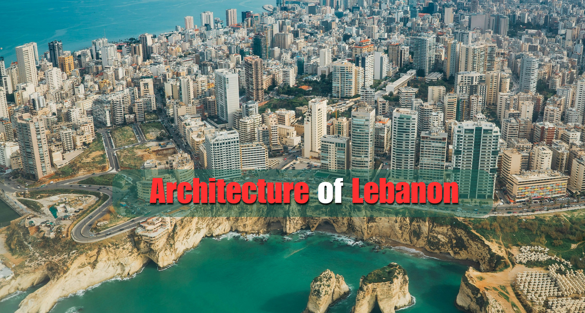
Lebanese architecture is a beautiful, Mediterranean mosaic—a mix of ancient Phoenician roots, Roman grandeur, Ottoman elegance, and French Mandate sophistication.
The most recognizable style emerged in the 19th century. You’ll see these characteristics across the mountains and in old Beirut neighbourhoods:
The Triple Arch: The hallmark of Lebanese design. These three central arches allow light into the main living hall (dar) and offer a view of the sea or mountains.
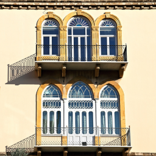
Red Tiled Roofs: Introduced via trade with Italy (specifically Marseilles), these pitched roofs became a national symbol, contrasting sharply against the blue sky.
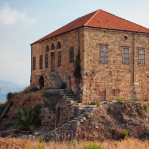
Mandour Windows: Ornate, wooden bay windows that allowed residents to see the street while maintaining privacy.
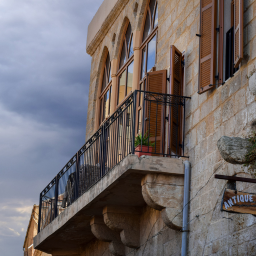
Yellow Limestone: Most traditional buildings are constructed from warm-toned local limestone, which ages beautifully.
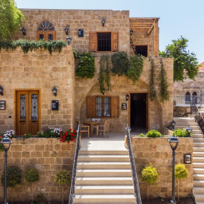
High Ceilings: Designed to keep interiors cool during the humid Mediterranean summers.
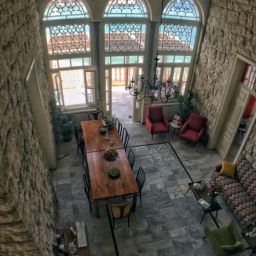
Marble Flooring: Used in the central halls to provide a cooling effect underfoot.
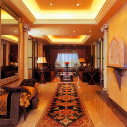
Lebanon is an open-air museum where different eras sit side-by-side:
Ancient & Roman: Massive stone temples, like those in Baalbek, which feature some of the largest monolithic columns in the world.
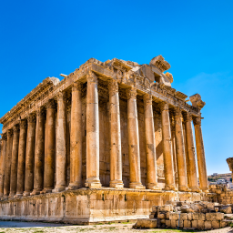
Ottoman Influence: Arched courtyards, fountains, and intricate stonework (found in palaces like Beiteddine).
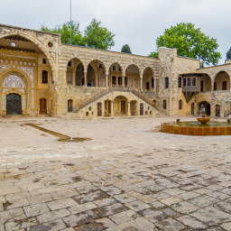
French Mandate: Art Deco and Haussmann-style apartments in central Beirut, featuring wrought-iron balconies and elegant symmetry.
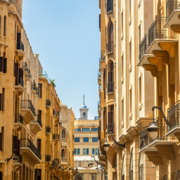
These Skyscrapers at Zaituna Bay embody the principles of Late Modernism by fluid, organic shapes and expansive glass facades that mirror the Mediterranean Sea.
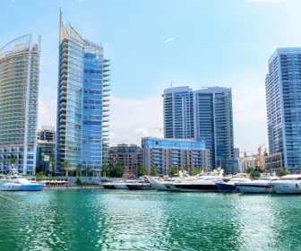